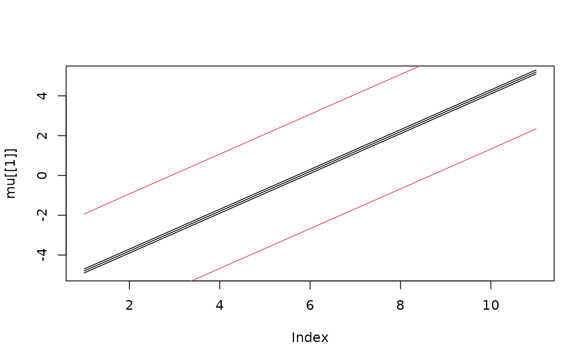

Simultaneous confidence regions for Gaussian mixture models
Source:R/simconf.mixture.R
simconf.mixture.Rdsimconf.mixture is used for calculating simultaneous confidence regions
for Gaussian mixture models. The distribution for the process \(x\) is assumed to be
$$\pi(x) = \sum_{k=1}^K w_k N(\mu_k, Q_k^{-1}).$$
The function returns upper and lower bounds \(a\) and \(b\) such that
\(P(a<x<b) = 1-\alpha\).
Usage
simconf.mixture(
alpha,
mu,
Q,
w,
ind,
n.iter = 10000,
vars,
verbose = FALSE,
max.threads = 0,
seed = NULL,
mix.samp = TRUE
)Arguments
- alpha
Error probability for the region.
- mu
A list with the
kexpectation vectors \(\mu_k\).- Q
A list with the
kprecision matrices \(Q_k\).- w
A vector with the weights for each class in the mixture.
- ind
Indices of the nodes that should be analyzed (optional).
- n.iter
Number or iterations in the MC sampler that is used for approximating probabilities. The default value is 10000.
- vars
A list with precomputed marginal variances for each class (optional).
- verbose
Set to TRUE for verbose mode (optional).
- max.threads
Decides the number of threads the program can use. Set to 0 for using the maximum number of threads allowed by the system (default).
- seed
Random seed (optional).
- mix.samp
If TRUE, the MC integration is done by directly sampling the mixture, otherwise sequential integration is used.
Value
An object of class "excurobj" with elements
- a
The lower bound.
- b
The upper bound.
- a.marginal
The lower bound for pointwise confidence bands.
- b.marginal
The upper bound for pointwise confidence bands.
Details
See simconf() for details.
References
Bolin et al. (2015) Statistical prediction of global sea level from global temperature, Statistica Sinica, vol 25, pp 351-367.
Bolin, D. and Lindgren, F. (2018), Calculating Probabilistic Excursion Sets and Related Quantities Using excursions, Journal of Statistical Software, vol 86, no 1, pp 1-20.
Author
David Bolin davidbolin@gmail.com
Examples
n <- 11
K <- 3
mu <- Q <- list()
for (k in 1:K) {
mu[[k]] <- k * 0.1 + seq(-5, 5, length = n)
Q[[k]] <- Matrix(toeplitz(c(1, -0.1, rep(0, n - 2))))
}
## calculate the confidence region
conf <- simconf.mixture(0.05, mu, Q, w = rep(1 / 3, 3), max.threads = 2)
## Plot the region
plot(mu[[1]], type = "l")
lines(mu[[2]])
lines(mu[[3]])
lines(conf$a, col = 2)
lines(conf$b, col = 2)
